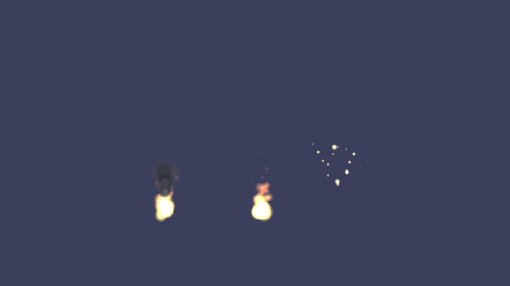
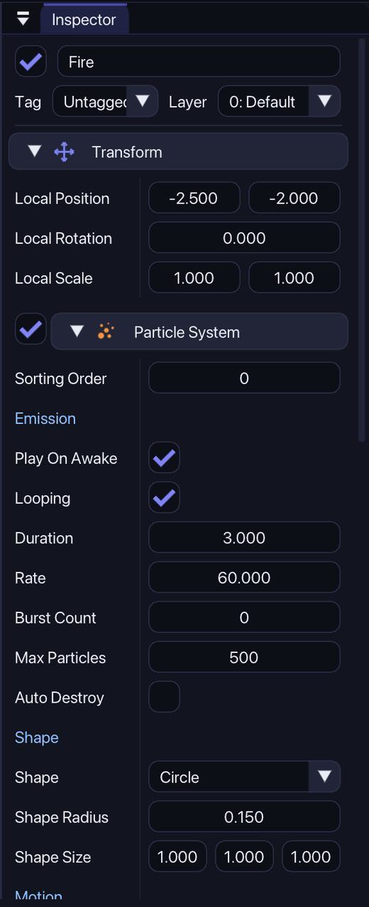

Fire, smoke and sparkles
A Particle System makes many small pictures that move and fade. It works in both 2D and 3D scenes.
1Add an effect
Open GameObject › Effects and choose Fire, Smoke, Explosion or Sparkles. There is also an empty Particle System if you want to start from nothing. The effect appears in front of your scene view.
When the object is selected, the effect plays in the Scene view so you can see changes while you make them.

2Change it in the Inspector
Select the effect and look at the Particle System component:
- Emission:
Rateis how many particles per second.Burst Countmakes a number of particles at once when the effect starts.Loopingoff plusDurationmakes an effect that stops by itself. - Shape: where the particles start (a point, a circle or a box).
- Motion:
DirectionandSpread(a wide spread flies in all directions), speed,GravityandDrag. - Look: lifetime,
Size StartandSize End,Color StartandColor End(give the end color an alpha of 0 to fade out), andAdditive.

Additive adds the light of the particles on top of what is behind them. It looks great on dark backgrounds (fire, sparks, magic). On a bright background leave it off, or the effect turns white.
At the bottom of the component are the buttons Restart, Stop or Play, Burst 20 and Apply preset... to start from Fire, Smoke, Explosion or Sparkles again.
3Use your own picture
Drag a small PNG (for example a star) onto the Texture field. Each particle is then drawn with that picture. Leave it empty to use the soft circle, or choose Circle or Square in Particle Shape.
4Start a burst from a script
A ParticleSystem can be controlled from code. This makes a puff of sparks wherever a coin was collected:
void Burst()
{
var fx = new GameObject("Coin Burst", GameObject.Scene);
fx.Transform3D.Position = Transform3D.Position; // in a 2D game use fx.Transform.Position
var ps = fx.AddComponent<ParticleSystem>();
ps.ApplyPreset(ParticlePreset.Explosion);
ps.BurstCount = 14;
ps.ColorStart = new Color(255, 225, 60, 255);
ps.AutoDestroy = true; // removes the object when the burst is over
ps.Play();
}If the object is already in your scene, you only need GetComponent<ParticleSystem>().Emit(20) to make 20 particles right now. Play(), Stop() and Clear() also work.